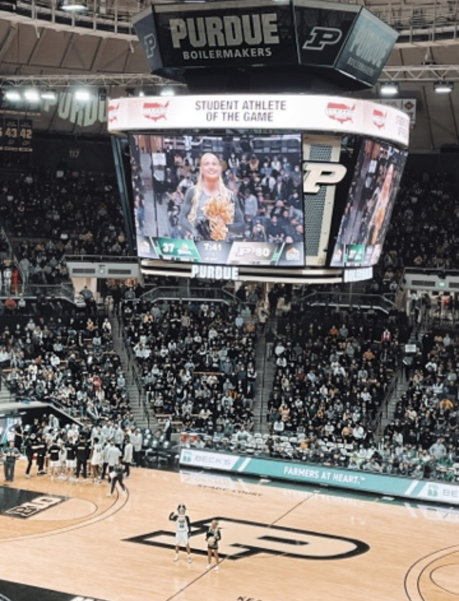
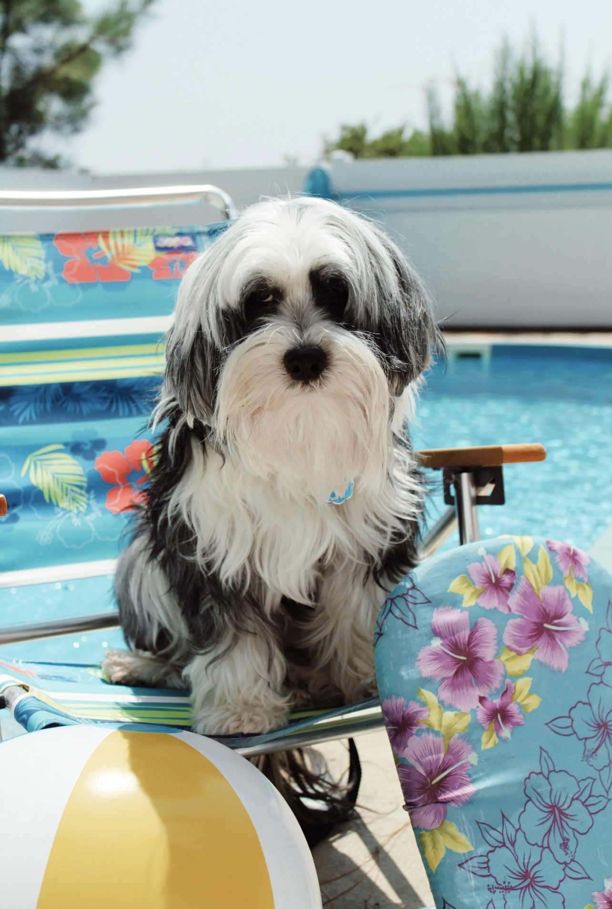
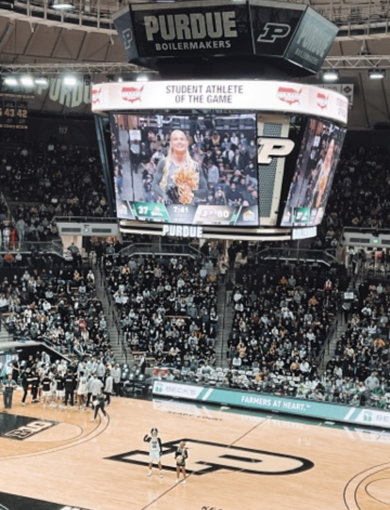
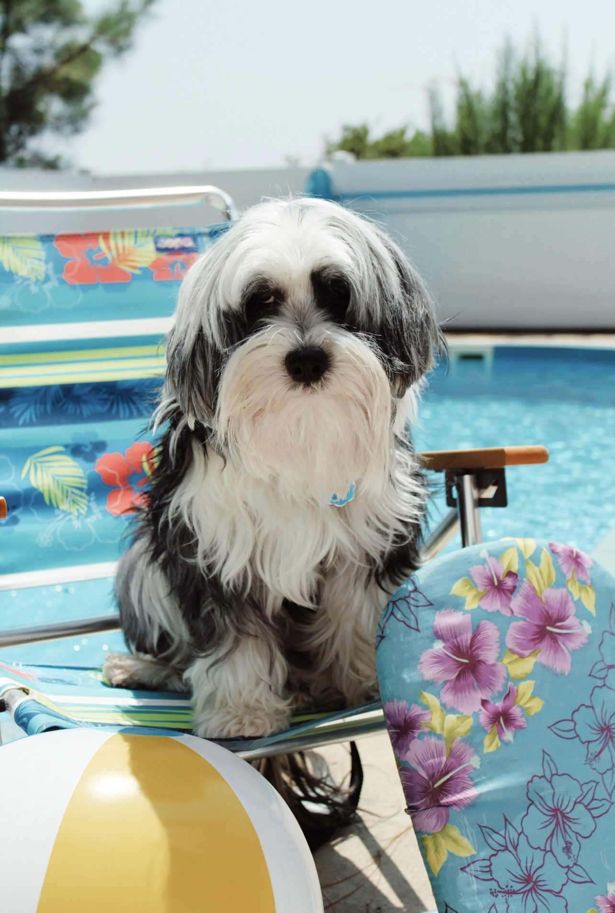
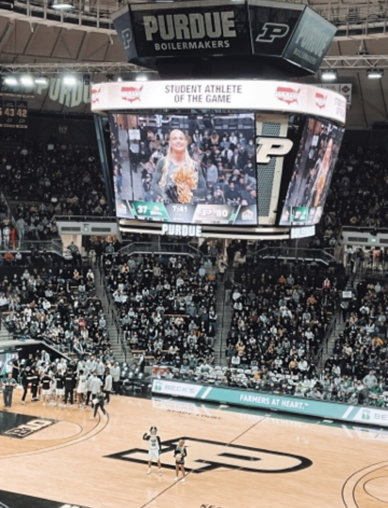
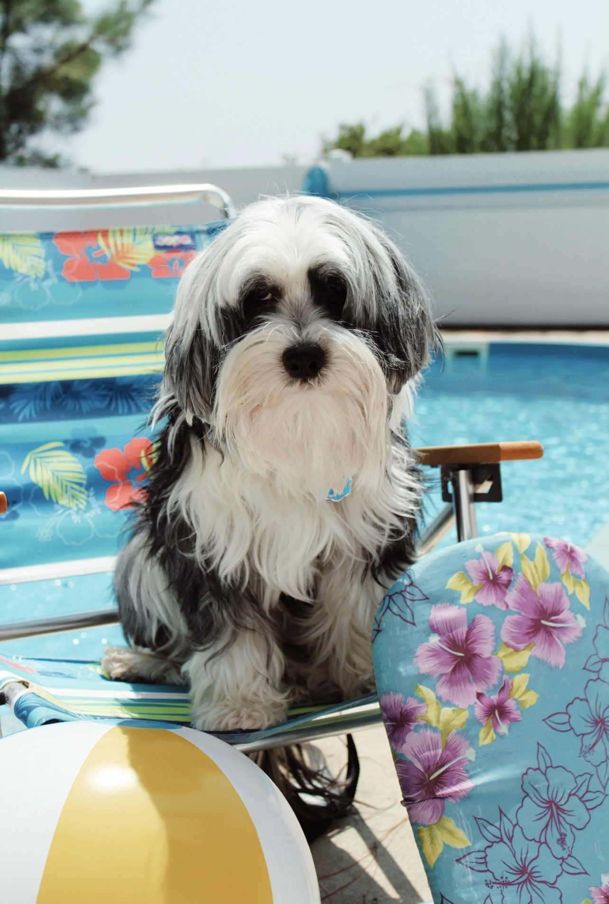

Background: Hi my name is McKeeley and I am a Masters student in the Animal Science department here at Purdue. I also received my B.S. degree here at Purdue in Animal Sciences with a concentration is Pre-Veterinary Medicine and a minor in Biology in May 2022.
History: I grew up in Bloomsbury, New Jersey, where my family still currently lives. I am a triplet. We are all a minute apart. I have a brother named Karrick, and a sister named Phelan. My family is very Irish, hence where our names come from. Growing up my parents put me in a lot of different sports, but what really stuck was gymnastics and cheerleading. I did competitive gymnastics my whole life up until 7th grade, at Parkettes (the Olympic Training Center), in Allentown, PA. I decided I did not want to do gymnastics anymore and dove right back into cheerleading. My dream was to cheer at the Division I level and become a veterinarian for small companion animals (which is what brought me to Purdue). Purdue had an excellent animal science/vet program and an incredible Cheerleading program. I was blessed enough to make the Cheerleading team here at Purdue University, where I cheered all 4 years of my undergraduate career. I had the best experience (seriously the best 4 years of my life) and truly everyday was a dream cheering on the Boilermakers. I experienced it all in football, mens and womens basketball, volleyball, and College Cheerleading Nationals.
Education: I graduated from Phillipsburg High School in Phillipsburg, NJ in August 2018. I then went on to obtain a Bachelor of Science degree at Purdue University in Animal Sciences with a concentration in Pre-Veterinary Medicine and a minor in Biology, in May 2022. I wanted to go to Veterinary school but I unfortunately did not get in anywhere I applied to. Everything happens for a reason, which led me to graduate school here at Purdue. Currently I am pursuing my Masters degree in Animal Sciences with a Data Science certification. This is a new and exciting opportunity that I am very eager to learn and widen my knowledge within these areas. My research currently is with swine where we are determining the effect of cooling pads and feeding Moringa oleifera on lactating sows under heat stress.
Fun Fact: I have a 15 year old Tibetan Terrier, named Shamrock.
